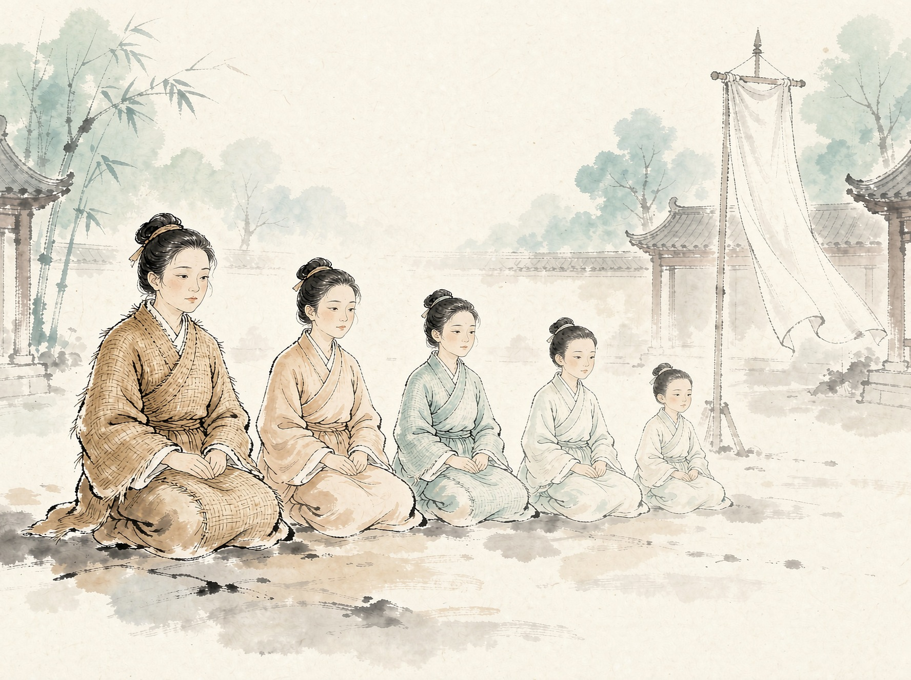

斩齐衰，大小功。
至缌麻，五服终：承接「此十义，人所同」，十义讲人与人的分位，五服讲分位落到丧礼上的轻重。
斩衰、齐衰、大功、小功、缌麻，由亲至疏，由重至轻，五等到底，故曰「五服终」。
齐衰之齐读 zī，衰读 cuī，皆古丧服专名，不作今音。
对比：此十义，人所同 / 斩齐衰，大小功。至缌麻，五服终
十义是「应当怎样」，五服是「痛到什么程度、守多久」。理说到位，还要落到身上：亲人去了，穿什么、哭多久、几时能复常，古人一件件定下来。
对比前文阴阳太和：服有轻重，是哀有节。太重则伤生，太轻则薄情；五等相次，使哀得其中，正是太和。礼不是压人，是替人把悲痛装进一个可以承受的容器。
勘破俗见：两类常见偏差。其一，拿五服当等级高下，以为亲疏即贵贱；其二，以为古礼既废便一无足取。契合般若范式：佛说五服，即非五服，是名五服。麻布粗细是缘起之相，随时代而改；其中「哀有节、亲有差」之意，才是可传之实。
亲人走了，古人要穿不同的麻衣，穿得越粗，心越重。
最近的人穿最粗的麻，守得最久；远一点的亲，服轻一些，日子也短一些。
这不是把人分高低，是让悲伤有个轻重，不至于压垮人。
今天的丧礼简单多了，但「记得谁、记多久」，还是一样的功课。

落到心上理解
承接上一课存疑：十义既立，何以落到身上？
理是说的，礼是做的。十义说「父子恩」，五服说「父丧守三年」，一句道理要有一件事来承接，才算落地。
五服是缘起：麻之粗细、期之长短，皆随时代而改。今日不服麻，而一年之祭、清明之扫仍在，意未断。
哀而有节，亲而有差，不因古礼废而薄情，不因守旧而伤生，便是无住。
五服是亲疏的等级，越亲越尊
五服是哀的轻重，让悲痛有节，不是给人排高下
古礼既废，便一无足取
麻布可废，「哀有节、亲有差」之意不可废
守得越久越孝
太久则伤生，礼要人能活下去才算礼
一、勘俗见。别提「五服」就讲等级。先讲「为什么要有个规矩」——人在极痛时，需要有人告诉他该做什么。
二、现代对照。像丧假有天数、追悼有流程。程式不能替代哀伤，但没有程式，哀伤会无处安放。
三、承接常变主线。服制（变）随时代而改，慎终追远（常）不改。
四、承接教与学二分。礼是长辈教的，哀是自己生的；只行礼而无哀，是空壳。
承接选择力练习：遇丧事，先问「这家最需要什么」，再决定做什么、做多久。
字义与句读
斩衰：最重之服，粗麻不缝边，子为父、妻为夫服之。齐衰：次重，麻边缝齐，齐读 zī。大功、小功：以功布粗细分。缌麻：最轻，细麻。终：五等至此而尽。
全句释义：斩衰、齐衰、大功、小功，直到缌麻，五等丧服到此为止。
二命题考辨
五服之制，见于《仪礼·丧服》，是一套极精密的亲属等差：以己为中心，上至高祖，下至玄孙，旁及三从，服有降有报。它同时是礼制、是法度——古代「准五服以制罪」，服制直接连着刑名。所以读五服，不能只当风俗看。
今人已不行此制，但「五服」作为亲属范围的代称仍在。要分清两层：麻布之服不可复，哀有节、亲有差之意可通。
般若范式互参
服制是因缘假名：麻之粗细、月之多少，皆一时之约。若执粗麻为孝之本，则贫者不能尽孝；若执一切礼为虚文，则人失所依。两边俱失。
延伸义理：
《金刚经》：法尚应舍，何况非法。礼亦如是。
《道德经》：礼者，忠信之薄，而乱之首。老子之警，正防礼沦为虚壳。
《坛经》：心平何劳持戒。礼之根，在心。
三跨典互参（老庄、般若对照）
《庄子》：居丧不哀，吾何以观之。庄子重情之真，不重服之备。
《道德经》：慎终如始。送死之慎，与养生同。
串联前文：十义立其理，五服落其事，理与事相配，人伦方不悬空。
四和前面课程的张力
次第链条继续延伸：……君则敬，臣则忠 → 此十义，人所同 → 斩齐衰，大小功 → 至缌麻，五服终 → 礼乐射，御书数。
呼应「父子恩，夫妇从」：恩与从是情，五服是把情排成可守的次序。
呼应「此五常，不容紊」：五常不乱，五服亦不乱；乱则亲疏失位。
呼应「玉不琢，不成器」：礼是琢人之具，琢得太狠则伤，太轻则不成。
五服以父系为重，今人家庭形态已变，此制还有可通之处吗？
「哀有节」的节，由谁来定——礼书，还是当事人的心？
礼既随时代而改，改到哪一步，就不成其为礼了？